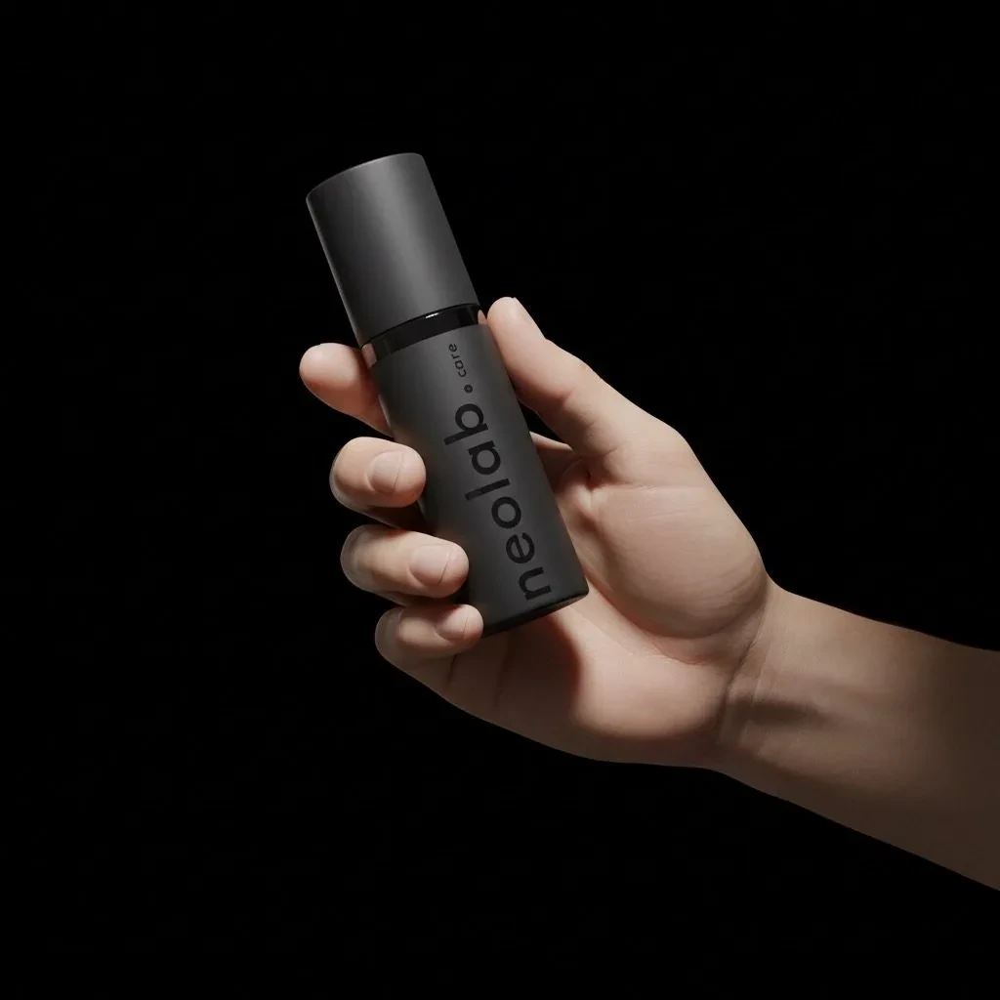

Personal care.
Quietly
considered.

01 / The design brief
Personal care, with less frictionA simpler place
in daily life.
The strategy begins with the effort around personal care: too many decisions, too many steps, too much visual noise.
The design response gives a single object a clear presence. A compact bottle, a restrained mark and controlled light make the brand feel considered at every scale. This case focuses on that design work, not on unverified product efficacy.
02 / Brand identity
Precision, with a human voice.
The identity is more than a black bottle. A custom wordmark, a warm near-black palette, carefully weighted sans-serif type and a contrasting serif form a complete visual language.


Poppins
Quiet precision.
Display / Medium 500 / −0.03em
Noto Serif Display
A human touch.
Emphasis / Italic 400 / natural tracking
Poppins
Considered in every detail.
Subtitle / Light 300 / 1.65 line height
Poppins
NEOLAB.CARE
Brand-book label / Medium 500 / 0.28em
A warm accent.
A deliberate pause.
Space around the mark.
A near-black foundation
#0A0A0APrimary background#1A1A1ASurface / layer#C8B89AAccent / rules / emphasis#111111Secondary background#242424Mid surface#E0D0B0Light accent#F5F5F0Primary textColour specimens are reference chips, not suggested page fills. Sand Gold is reserved for accents, rules and typographic emphasis. Crimson #C1121F belongs to physical applications only; it is not a digital accent.
03 / The object
Form, material, scale
One object.
Careful
attention.
A tall, minimal silhouette gives the bottle the presence of a personal instrument. The vertical wordmark follows the form, while the dark finish keeps attention on proportion and detail.
Design intent
Reduce the visual effort around the product. The object should feel easy to keep close, easy to recognise and visually calm within its surroundings.
What this rendering establishes
The proposed appearance of the bottle and label. It does not verify manufacturing tolerances, packaging performance or a final production specification.

04 / Packaging
The surrounding experienceThe object.
And everything
around it.
The packaging extends the bottle’s restraint into a compact presentation system. Surface, typography and proportion create continuity between the product and its box.


{kind=link}

05 / Art direction
Early visual explorationsLight gives
the object space.
The early design board explored mineral surfaces, distant landscape and sculptural light. These images document the development of the visual world; they are not photographs of a real installation.


06 / Motion direction
Original film / 10-second visual excerptA slower
kind of reveal.
The original film lets the bottle emerge through light and atmosphere. The short, silent excerpt below preserves that visual idea. It contains no new performance or clinical claims.
07 / The everyday context
Campaign image directionDesigned to
stay close.
The image system moves between a sculptural object and a familiar personal possession. Pocket-scale context supports the brief’s emphasis on a simpler daily experience.


08 / Production artwork
Behind the presentationThe working
detail.
The archive includes flat packaging artwork alongside the visual mockups. That connection matters: the case shows both the intended experience and the files used to develop it.

A digital
expression.
The brand across a real user journey: homepage, story, freshness. Original, unretouched browser captures in new presentation frames. Select a screen to see it at full size.


Live website captures, separate from the earlier product concepts. The sand-gold logo is the current web variant. Website copy, prices and product claims are shown as interface content, not independently verified efficacy or launch evidence. Logo, palette and source record ↗
09 / The work on record
Design development / 2025–26A coherent
product world.
Still evolving.
- Identity and visual directionSource wordmarks, design-board explorations and a defined material palette.
- Packaging and product imageryOriginal mockups, high-resolution renders and flat box artwork.
- Motion and campaign conceptsExisting film material and contextual images.
The work is presented as an active brand build. This case does not claim a verified launch, regulatory approval, clinical efficacy or commercial performance.
Pulse Branding project archive. Original supplied brand and concept assets; new editorial case-study treatment. Evidence and credits ↗